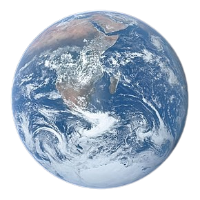

We are creations of the world
Earth is the third planet from the Sun and the only astronomical object known to harbor
life. This is enabled by Earth being a water world, the only one in the Solar System sustaining
liquid surface water. Almost all of Earth's water is contained in its global ocean, covering
70.8% of Earth's crust. The remaining 29.2% of the Earth's crust is land, most of which is located
in the form of continental landmasses within the Earth's land hemisphere. Most of Earth's land is
somewhat humid and covered by vegetation, while large sheets of ice at Earth's polar deserts retain
more water than Earth's groundwater, lakes, rivers and atmospheric water combined. Earth's crust
consists of slowly moving tectonic plates, which interact to produce mountain ranges, volcanoes,
and earthquakes. Earth has a liquid outer core that generates a magnetosphere capable of deflecting
most of the destructive solar winds and cosmic radiation.
Land
Land, also known as dry land, ground, or earth, is the solid terrestrial surface of the Earth not
submerged by the ocean or another body of water. It makes up 29.2% of the Earth's surface and includes
all continents and islands. Earth's land surface is almost entirely covered by regolith, a layer of
rock, soil, and minerals that forms the outer part of the crust. Land plays an important role in the
Earth's climate system, being involved in the carbon cycle, nitrogen cycle, and water cycle. One-third
of the land is covered in trees, another third is used for agriculture, and one-tenth is covered in
permanent snow and glaciers. The remainder consists of desert, savannah, and prairie.
Ocean
The ocean is the body of salt water that covers ~70.8% of the Earth. In English, the term ocean
also refers to any of the large bodies of water into which the world ocean is conventionally divided.
Distinct names are used to identify five different areas of the ocean: Pacific, Atlantic, Indian,
Antarctic/Southern, and Arctic. The ocean contains 97% of Earth's water and is the primary
component of the Earth's hydrosphere, thus the ocean is essential to life on Earth. The ocean influences
climate and weather patterns, the carbon cycle, and the water cycle by acting as a huge heat reservoir.
Animal
Animals are multicellular, eukaryotic organisms in the biological kingdom Animalia.
With few exceptions, animals consume organic material, breathe oxygen, have myocytes and are
able to move, can reproduce sexually, and grow from a hollow sphere of cells, the blastula,
during embryonic development. Animals form a clade, meaning that they arose from a single
common ancestor.
Plant
Plants are the eukaryotes that form the kingdom Plantae; they are predominantly photosynthetic.
This means that they obtain their energy from sunlight, using chloroplasts derived from endosymbiosis
with cyanobacteria to produce sugars from carbon dioxide and water, using the green pigment
chlorophyll. Exceptions are parasitic plants that have lost the genes for chlorophyll and
photosynthesis, and obtain their energy from other plants or fungi.